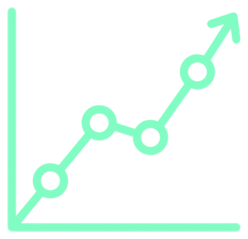
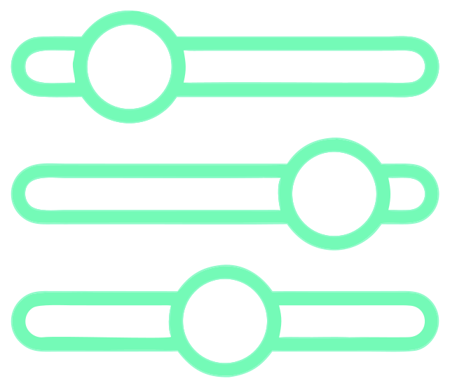

Бачиш повну картину
Збирай доходи й витрати в одному місці. Помічай звички та знаходь кошти для того, що справді важливо.
Зрозуміла аналітика
Твої гроші. Твій спокій. Твій потік.
Знайди баланс між сьогоднішніми бажаннями й завтрашніми цілями. Плануй витрати й заощаджуй у власному темпі — крок за кроком.
План на 12 місяців
За 12 місяців ти відкладеш
2 000 ₴ × 12 міс. · без відсотків
Фінансова подушка починається з малого. Головне — регулярність.
Без складних таблиць. Без зайвих обіцянок.
Як це працює
Не потрібно ставати фінансовим експертом. Достатньо знати, що для тебе важливо.

Збирай доходи й витрати в одному місці. Помічай звички та знаходь кошти для того, що справді важливо.
Зрозуміла аналітика

Обирай комфортну суму та власні цілі. Твій план підлаштується під життя, а не навпаки.
Гнучкий план
Будуй фінансову подушку крок за кроком. Контролюй свій бюджет і впевнено плануй завтра.
Більше впевненості
Відео
Вебінар від експертів НБУ про доходи, витрати й заощадження — корисний контекст перед тим, як планувати власний внесок.
Переваги
Не жорсткі обмеження, а опора для твоїх щоденних рішень.
Доходи, витрати й залишок — в одній картині. Легко помітити, де є простір для заощаджень.
Бачиш не лише бажану суму, а й те, скільки вже вдалося відкласти.
Коригуй суми й терміни під свій місяць. Хороший бюджет підтримує, а не змушує відмовлятися від усього.
Довіра
«Потік монет» — концепція сервісу, тому ми показуємо лише те, що можна перевірити в самому макеті.
Відгуків користувачів поки немає: сервіс на стадії концепції. Блок із реальними відгуками з’явиться після запуску.
Запитання й відповіді
Перш ніж планувати гроші, хочеться все зрозуміти. Це нормально.
«Потік монет» — концепція сервісу. У цьому макеті жодні дані не збираються. Перед запуском мають бути визначені правила доступу, зберігання й видалення даних та опублікована політика конфіденційності.
Ні. Симулятор працює без реєстрації, без картки й без доступу до банківських даних: достатньо обрати суму та термін.
Ні. Розрахунок простий і прозорий: щомісячний внесок, помножений на кількість місяців. Відсотки та інфляція не враховуються.
Так. Рухай повзунок або обирай інший термін — результат оновиться одразу.
Зворотний зв’язок
Не знайшов відповіді в запитаннях? Залиш повідомлення — ми відповімо протягом одного робочого дня.
Поля з позначкою обов’язкові. Це навчальний макет: дані перевіряються в браузері й нікуди не надсилаються.
Обери суму в симуляторі — і подивись, куди приведуть маленькі регулярні внески.
Контакти
Умовна адреса офісу в центрі Львова — приклад для макета, а не діючий офіс.